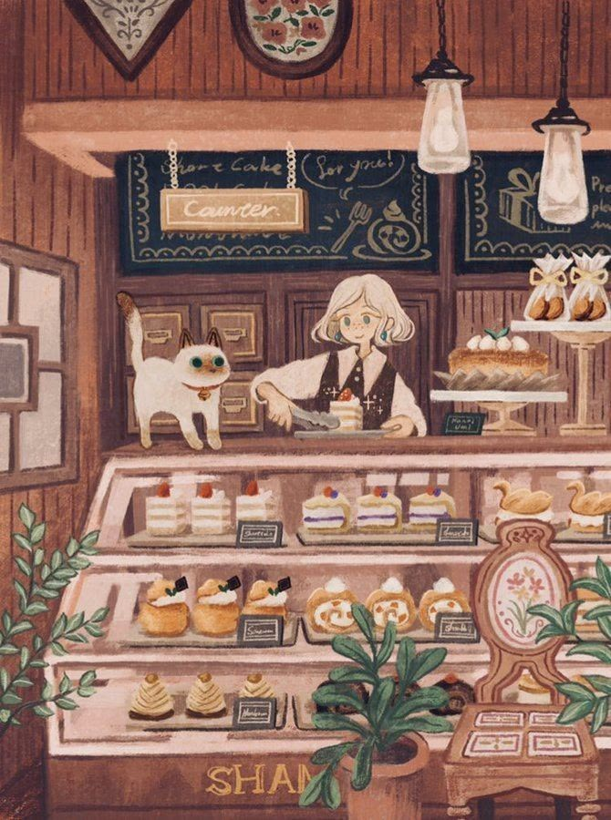
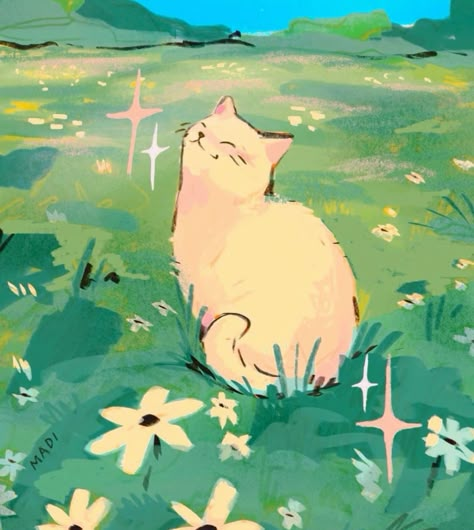

The Hidden Bakery in Misty Fields
Floradessa

Backstory
Floradessa was raised in a bakery. No one knows where the bakery came from, or why a small child was living alone in the building that just appeared one day, selling bread and pastries with a big smile. And when Floradessa got older, she too began to wonder how she and her bakery got there.
Personality Traits
- Resilience
- Tenacity
- Curiosity
Biscuit

Floradessa's best friend is a sea cat named Biscuit. She is mostly a regular cat, but she does have a peculiar habit of controlling water with a meows and purrs. Floradessa also doesn't know where she came from, but she has lived with her in the bakery since she can remember, so to her, she's family.